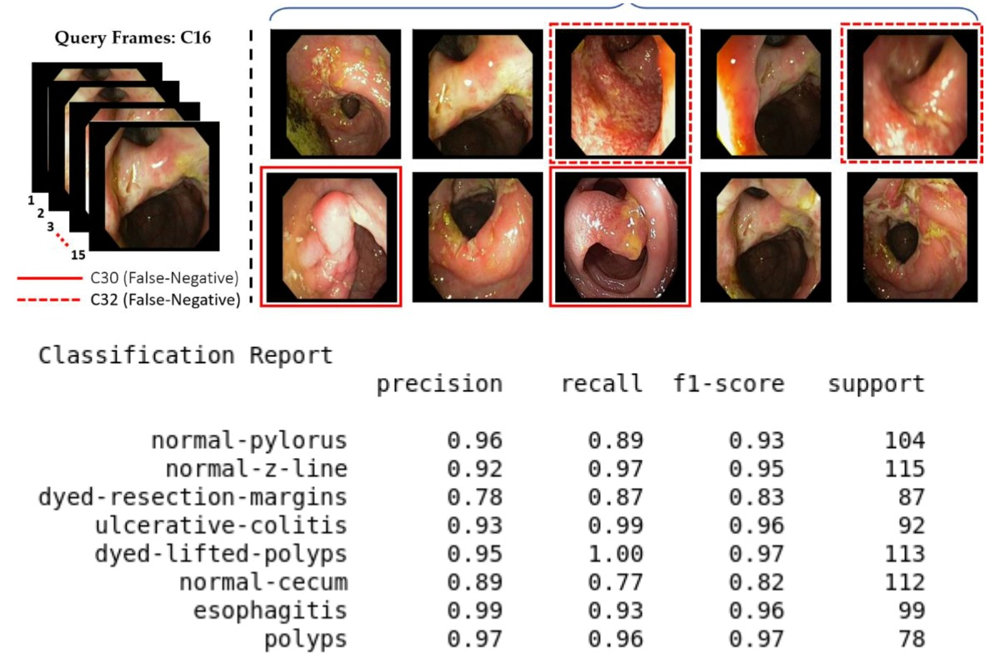
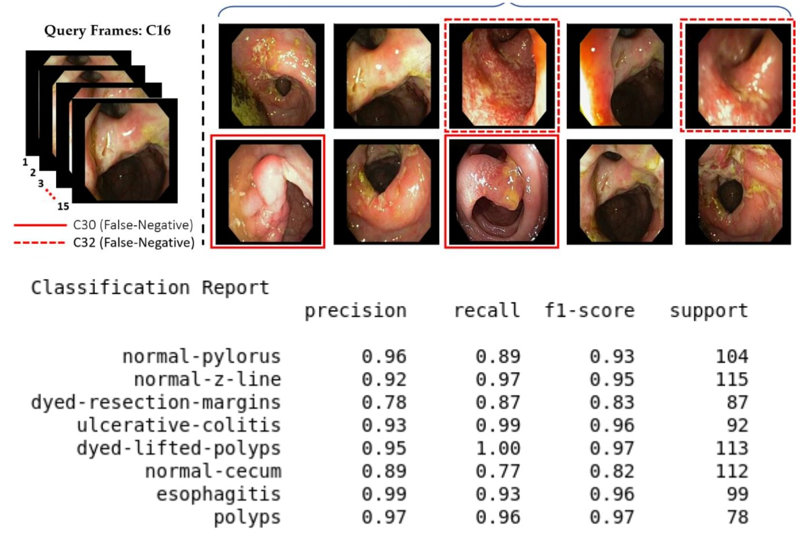
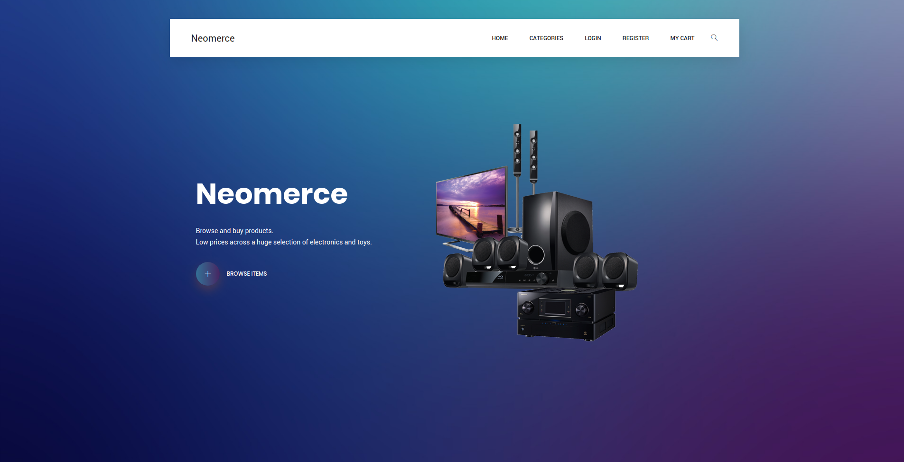
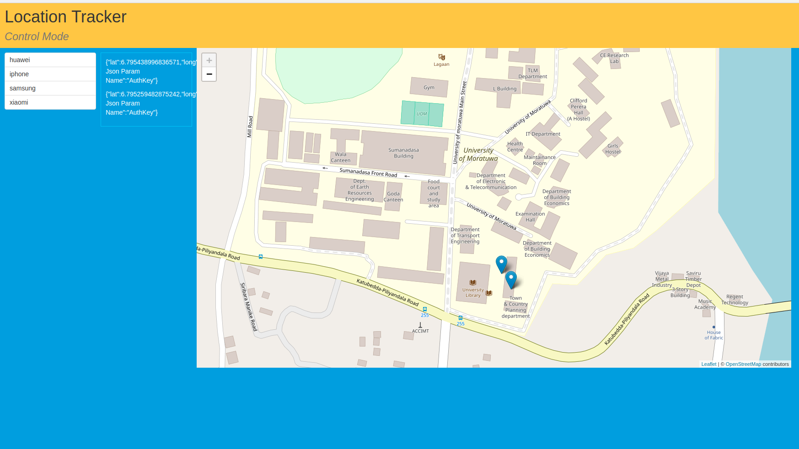

Classification of Anomalies in Gastrointestinal Tract through Endoscopic Imagery with Deep Learning
Python, Keras and transfer learning using VGG19 pretained model with KVASIR dataset
Python, Keras and transfer learning using VGG19 pretained model with KVASIR dataset
Using NodeJS, ExpressJS, EJS and Postgresql
This is a fully featured single vendor e-commerce platform written in NodeJS and Postgresql. Like in e-bay guests can also have their shopping cart for a specific time period saved. Registered users have a shopping cart which doesn't get expired. Also registered users are eligible for promotions. Admin has a control panel in which he can perform admin actions and view statictics.
Using PHP and MariaDB
A fully featured medical history management platform for doctors, patients and medical centers. Doctors can CRUD medical records. Patients can view their medical history, can set up notifications and reminders for appointmenst as well as medication plans. Medical centers can manage the history of doctors and patients.
Python, Keras with MASK_RCNN using custom dataset
Using firebase
